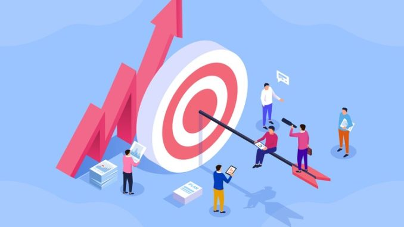

My future goals that I would like to reach in my education is to pass all my subjects and aim to do well at University. I aim to keep organised with university while working and learn as much as I can as I work my way up in uni.
In the future, I'd like to work within the field of technology, especially in software engineering. I aspire to become a software engineer, I'm not quite sure what I Will do specifically whether it's machine learning engineer, front-end developer, back-end developer, AI engineer, or even Full Stack Enginner!!! I'm sure I will work that out when the time comes.
